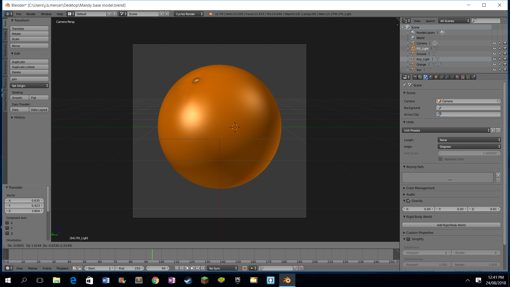
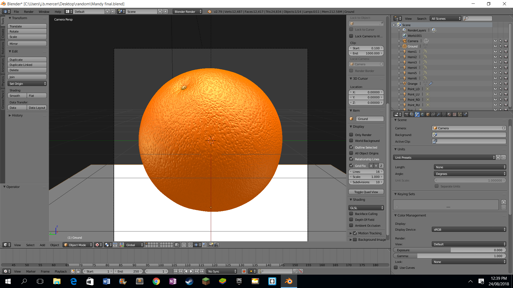

The Creation


I created my 3d model using the design tool blender. I chose blender as it has alot of additional tools as opposed to 3d builder which I used at the start. I switched from using 3d builder to blender after about a week as I realised that 3d builder didn't really have that many tools when it came to editing and texturing objects. I chose to make my 3d object an orange as it is a realatively simple object however a lot of detail specifically in the texturing and sculpting can be added.